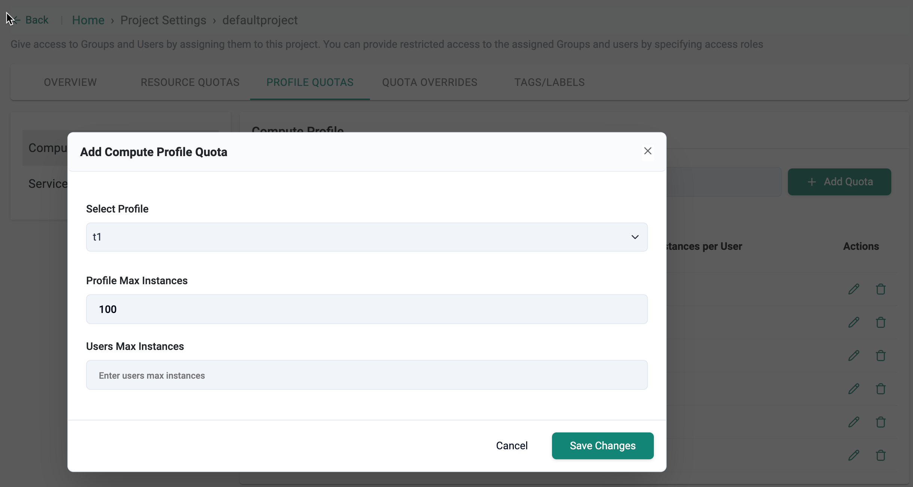
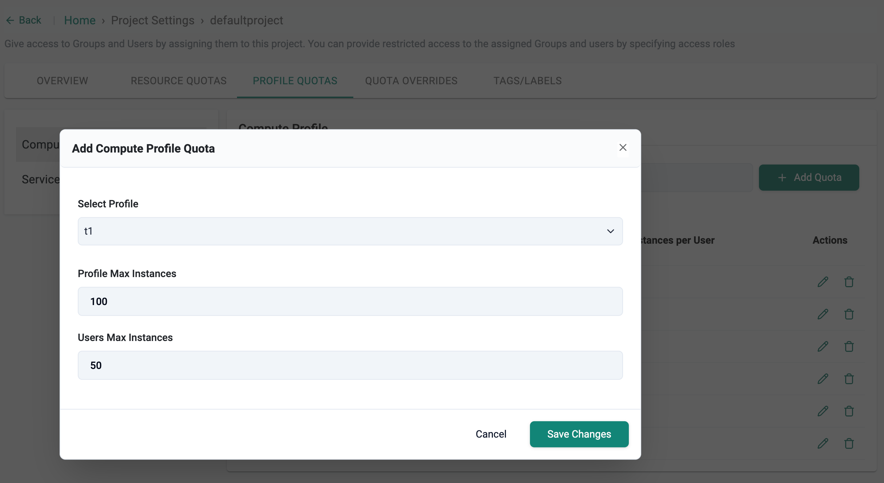
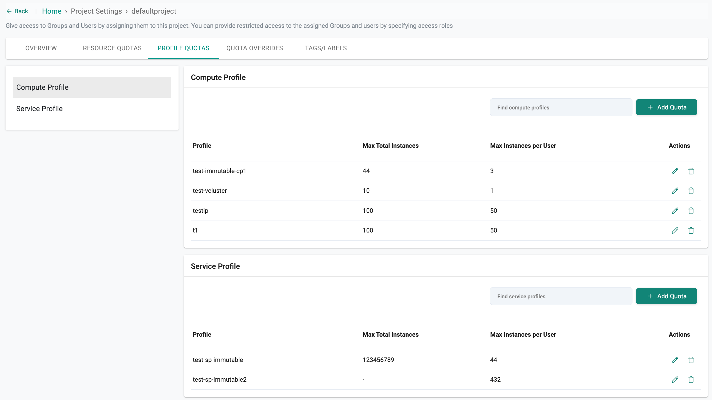

Profile Quotas
Overview¶
Quotas control how many instances of a Compute or Service Profile can be launched at different scopes: Organization, Project, and User. This hierarchy ensures centralized governance while allowing granular control at the team and user level.
Profile quotas are applied at three levels:
Organization-Level Quota¶
The Org Admin decides how to distribute the assigned quota across multiple projects or teams.
For example, if the organization has a total quota of 200 instances, the Org Admin may allocate: - 120 instances to Project A (expected to have heavier workloads) - 80 instances to Project B
This ensures that resources are distributed based on anticipated usage.
Project-Level Quota¶
Each project receives its share of the overall org quota, as defined by the Org Admin.
For example, within Project A’s allocation of 120 instances, the Admin may further divide: - 80 instances for the Development team - 40 instances for the QA team
This ensures that no single group consumes the entire project allocation.
User-Level Quota¶
To prevent an individual user from exhausting all project resources, the Org Admin can set per-user limits.
For example, within the QA team’s 40-instance quota: - Each user may be limited to 5 instances maximum.
This ensures fair usage and prevents one user from consuming the team’s full allocation.
This multi-level quota system provides fine-grained control over resource usage and simplifies profile instance governance across teams and users.
Quota Enforcement Hierarchy¶
| Level | Scope | Configuration Location | Enforcement Order |
|---|---|---|---|
| Organization | Across all projects/users | Global Settings (YAML) | Highest (applies globally) |
| Project | Individual project | Project → Profile Quotas | Enforced after org-level |
| User | Per user within a project | Project → Profile Quotas | Enforced last (most granular) |
⚠️ Note: Quotas are enforced top-down. Organization level limits apply globally and override project or user level settings. Project level quotas are enforced next and restrict resource usage within that project. Finally, user level quotas apply the most granular control, limiting individuals within the bounds set by project and organization levels.
Organization-Level Quota¶
- Defines the global cap for how many instances of a profile can be launched across all projects and users in the organization.
- Ensures resource governance at the highest level—helpful for budgeting, capacity planning, and preventing runaway usage.
Configure via Global Settings YAML
profiles:
- name: demo-quota-globalsettings
quota:
max-instances: 100 #This profile can have orglevel quota of 100
Note: If the org-level quota is set to 100, a maximum of 100 instances can be launched across all projects and users.
Project-Level Quota¶
- Defines the maximum number of compute or service profile instances that can be launched within a specific project.
- Enables controlled, team-specific resource allocation without breaching organization-level limits.
Configure via Project Settings UI
- Click the Settings icon in the controller for the desired project and select the Profile Quotas tab.
- Click + Add Quota to add a quota for either Compute Profile or Service Profile, depending on your requirement.
- In the Add Compute Profile Quota dialog:
- Select Profile: Choose the compute profile.
- Profile Max Instances: Enter the total number of instances allowed across the project (e.g., 100).
- Click Save Changes to apply the quota settings.

Note: - If a project's profile quota is 100, no more than 100 instances of that profile can be launched in that project even if other projects have spare capacity. - Users can follow the same process to add quotas for service profiles as well.
User-Level Quota¶
- Limits the number of profile instances an individual user can launch within a project.
- Ensures fair usage among users, preventing one user from monopolizing the project quota.
Configure via Project Settings UI
- Click the Settings icon in the controller for the desired project and select the Profile Quotas tab.
- Click + Add Quota to add a quota for either Compute Profile or Service Profile, depending on your requirement.
- In the Add Compute Profile Quota dialog:
- Select Profile: Choose the compute profile.
- Profile Max Instances: Enter the total number of instances allowed across the project (e.g., 100).
- Users Max Instances: Specify the maximum number of instances a single user can launch within the project (for example, 50).
- Click Save Changes to apply the quota settings.

After quotas have been set at the project and user levels, this page provides a comprehensive view of the assigned compute and service profile quotas
